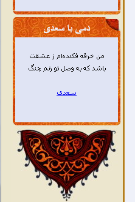

وب سایت شخصی سیاوش مرتضوی
نمونۀ جالبی از قالب طراحی شده توسط صاحب سایت که کاملاً با قالب کلی سایت همخوانی دارد. کد نمایش شعر در ستون سمت چپ قرار گرفته، فقط اشعار سعدی را نمایش میدهد و بهینهسازی نیز بر روی آن اعمال شده است:
بیت تصادفی در سایت گنجور
صفحۀ بیت تصادفی در سایت گنجور نیز به کمک کدهای نمایش شعر ساخته شده است.
گزیر - گاهنوشتهای حمیدرضا محمدی
در این نمونه، یکی از قالبهای سادۀ پیشفرض کدهای نمایش گنجور (این قالب) کمی دستکاری شده، رنگ مرزها و عنوان آن با قالب وبلاگ همخوان شده، پارامتر نمایش دو بیت (در صورت امکان) نیز تنظیم شده و نهایتاً پس از اعمال رهنمودهای بهینهسازی کد نمایش شعر برای نمایش اشعار پایین هر مطلب در قالب وبلاگ گنجانده شده است.
پژ
سایت آقای سیدرضی علویزاده که طراح آن قالبی همخوان با سایت خود برای کدهای گنجور طراحی کرده است.
نوشتههای یک سعید
با توجه به عرض مناسب نوار کناری قالبی با حال و هوا و همخوان با رنگبندی سایت برای نمایش شعر انتخاب کرده است.
تالارهای گفتگوی عاشقان
نمونهای از نمایش کد شعر در یک انجمن، نوار عنوان مطابق قالب تالار بدلخواه شده و کاملاً همخوان با سایر عناصر قالب استفاده شده در پایین صفحات جا خوش کرده است.
رامتینا
نمونهای دیگر، یک بیت شعر در سایت رامتینا، ساده و بدون هیچ توضیح اضافه و ... زیبایی در سادگی است.
جملات گرانبهای زندگی
یک بیت عشق در جملات گرانبهای زندگی همرنگ سایت با نمای فیروزهای و جا خوش کرده در ستون کناری سایت.
وبلاگ شخصی هادی فرهنگدوست
وبلاگ شخصی هادی فرهنگدوست: جا داده شده در میانهٔ نوشتهها و ترکیب شده با یک تصویر متغیر در زیر بیت.
نمونههای دیگر
در صورتی که از کد نمایش شعر گنجور استفاده میکنید، مخصوصاً اگر آن را متناسب با قالب سایت یا وبلاگتان سفارشی کردهاید با من تماس بگیرید تا سایت یا وبلاگ شما را در این صفحه معرفی کنم.